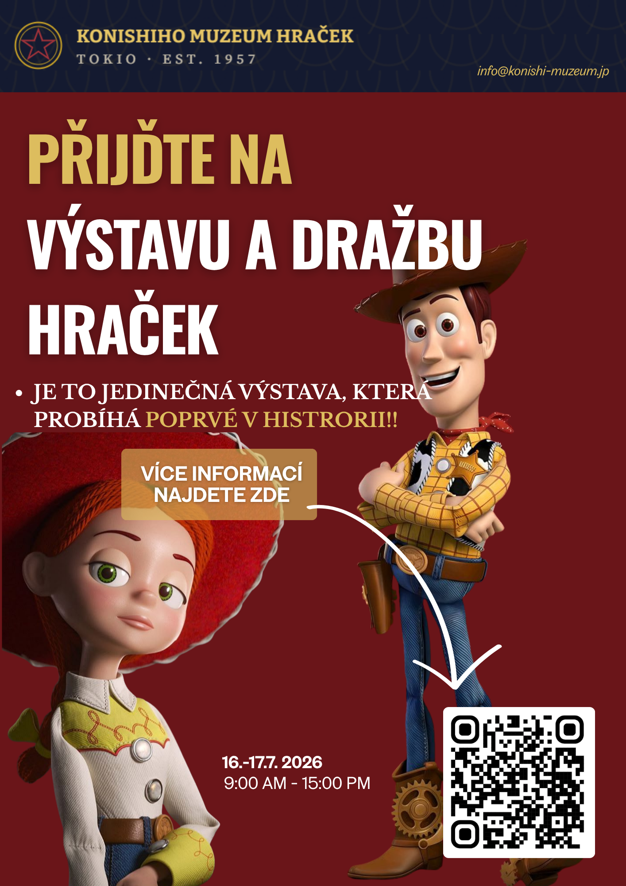
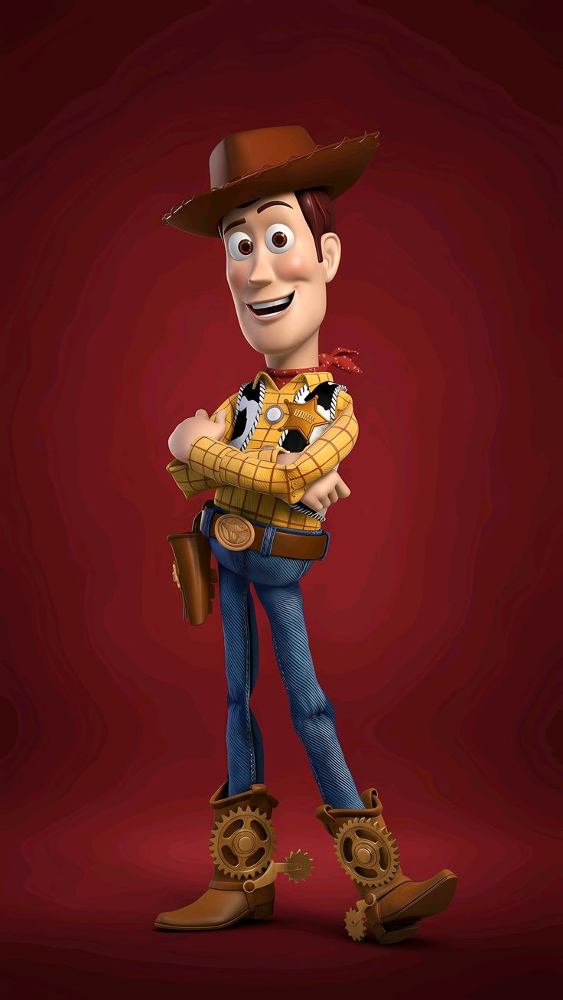
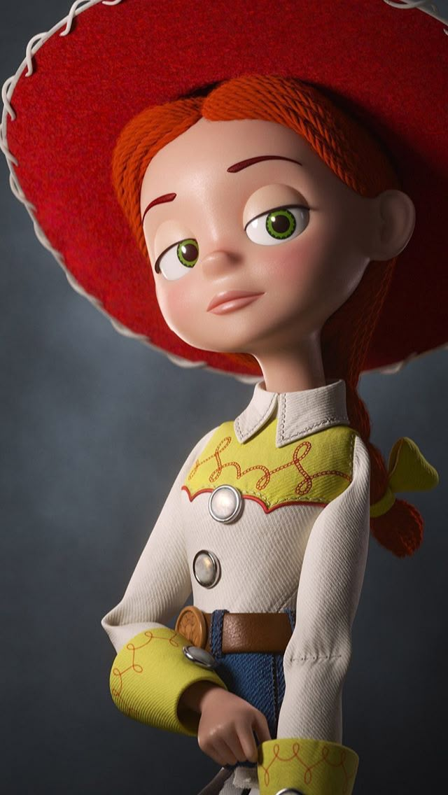
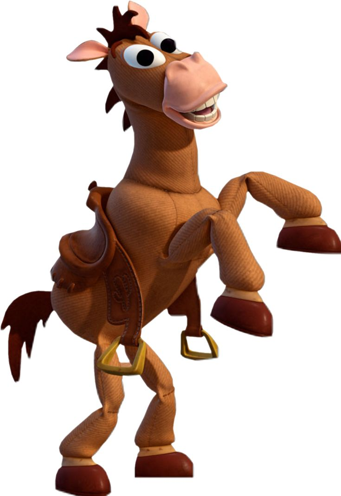
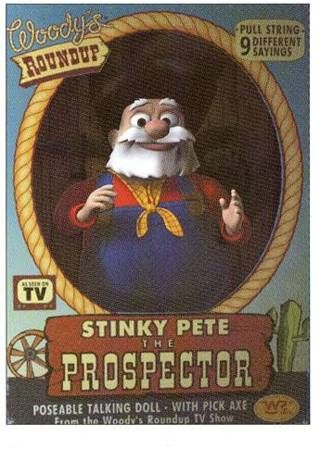

KONISHIHO MUZEUM HRAČEK
TOKIO · EST. 1957
Exkluzivní odhalení & dražba
„Největší sběratelská událost století v Japonsku — chvíle, kdy se legenda Divokého západu vrací domů, kompletní po prvé od roku 1957.“
Dražba sbírky „Woodyho kovbojka“ začíná za
Pozvánka

Příběh sbírky
Téměř sedmdesát let byla sbírka „Woodyho kovbojka“ roztroušena po soukromých sbírkách tří kontinentů. Kurátoři Konishiho muzea hraček po ní pátrali od roku 1957, kdy muzeum poprvé otevřelo své brány v tokijské čtvrti Ginza.
Zlom přišel díky spolupráci s texaským archivem Alovy stodoly hraček, kde byl objeven poslední chybějící kus — figurka zlatokopa Starýho Peta, po desetiletí uzavřená v neotevřené krabici na půdě domu v Coloradu.
Po měsících ověřování pravosti je sbírka poprvé v historii kompletní. Muzeum má tu čest představit všechny čtyři exponáty při jediné výjimečné dražební akci, a to současně na dvou místech v Tokiu.
Cesta sbírky
Klepnutím na rok zobrazíte více
Dražební katalog
Každý exponát prošel nezávislou certifikací pravosti. Vyvolávací ceny odrážejí mimořádnou vzácnost a kompletnost sbírky.

EXPONÁT Č. 1
Stav: velmi dobrý, se stopami láskyplného používání
Vůdčí postava seriálu a srdce celé sbírky. Funkční tahový mechanismus hlasu.
¥ 38 000 000
cca 5 890 000 Kč

EXPONÁT Č. 2
Stav: výborný, sytě zachovalé barvy textilu
Živelná kaskadérka seriálu, proslulá copánkem a puntíkovaným kloboukem.
¥ 29 500 000
cca 4 570 000 Kč

EXPONÁT Č. 3
Stav: dobrý, drobné stopy opotřebení srsti
Věrný oř Šerifa Woodyho. Sedlo je originální a plně dochované.
¥ 22 000 000
cca 3 410 000 Kč

EXPONÁT Č. 4
Stav: NOVÝ — v původní, nikdy neotevřené krabici
Poslední chybějící kus sbírky, dochovaný v neporušeném obalu z roku 1957.
¥ 65 000 000
cca 10 075 000 Kč